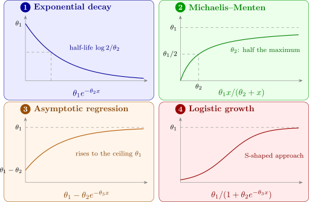

12.1 Non-linear models
A model is linear in the parameters if each derivative \(\partial f/\partial \theta _j\) is free of \(\boldsymbol \theta \). For \(f = \theta _1 + \theta _2x + \theta _3x^2\) the derivatives are \(1\), \(x\), \(x^2\); for \(f = \theta _1e^{-\theta _2x}\) they are \(e^{-\theta _2x}\) and \(-\theta _1xe^{-\theta _2x}\), which involve the parameters, so the model is non-linear. Figure 26 shows four common models.

Intrinsically linear models
Some non-linear models become linear after a transformation. Taking logarithms of \(y = \theta _1e^{-\theta _2x}\) gives \(\log y = \log \theta _1 - \theta _2x\), linear in \(\beta _0 = \log \theta _1\) and \(\beta _1 = -\theta _2\), and the reciprocal of the Michaelis–Menten model gives \[ \frac 1y = \frac {1}{\theta _1} + \frac {\theta _2}{\theta _1}\cdot \frac 1x , \] the Lineweaver–Burk form, linear in \(1/x\). Such models are called intrinsically linear. But the transformation applies to the errors as well. Fitting \(\log y = \beta _0 + \beta _1x + \varepsilon \) by least squares assumes that the original model is \(y = \theta _1e^{-\theta _2x}e^{\varepsilon }\), with multiplicative errors whose spread grows with the mean. If the errors are really additive, \(y = \theta _1e^{-\theta _2x} + \varepsilon \), the transformed model has non-constant variance, and the transformed fit is not the least-squares fit of the original model. Whether to transform therefore depends on how the errors behave (Section 6), not only on convenience. Models such as the asymptotic regression \(\theta _1 - \theta _2e^{-\theta _3x}\) cannot be linearised at all.
Questions on this section
Stuck on something here? Ask below and it stays attached to this topic.